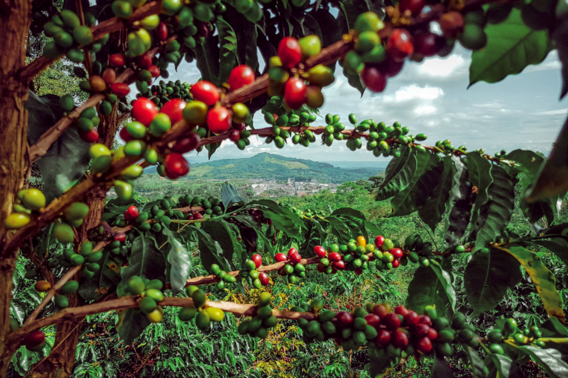
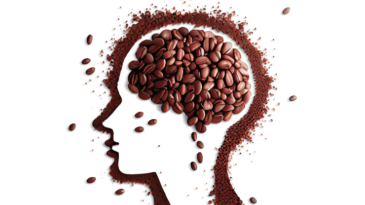
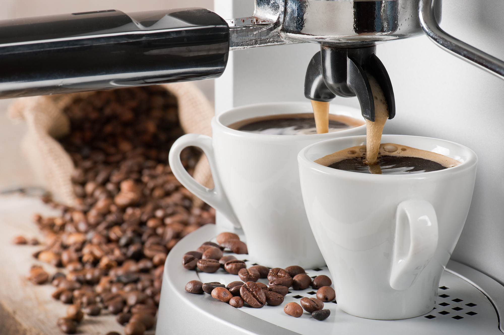

Plantação do Café
Normalmente, a produção dos frutos acontece cerca de dois anos e meio após o plantio. Porém, lavouras bem implantadas, com mudas de qualidade e bem conduzidas, podem ter uma primeira catação de frutos antes do segundo ano e uma produção ainda maior a partir dos dois anos e meio.
Cafezal é o nome da plantação do café, que como toda cultura precisa de um bom planejamento e uma boa execução para seu sucesso
A prática mais comum de como plantar café é com covas de 30 cm de profundidade por 30 cm de largura. Por sua vez, a distância de uma muda para outra é indicada entre 3 e 4 metros para o plantio manual e 2,5 a 3,5 metros para o plantio mecanizado.
Malefícios do Café
Abusar do café pode causar arritmia, agitação, irritabilidade, nervosismo e insônia. Em gestantes, o consumo acima da quantidade segura pode causar atraso na formação cerebral do feto.
O café pode ocasionar, ainda, dor de cabeça, azia, desconforto abdominal e náuseas, além de elevar a frequência cardíaca, aumentar a pressão arterial e ocasionar tremores nas mãos.
Doses elevadas de cafeína, por sua vez, podem provocar efeitos negativos no organismo, como taquicardia, ansiedade, tremores, dores de cabeça, náuseas, insônia e palpitações.
consumo de Café
A maioria dos adultos pode consumir com segurança 400 mg de cafeína – ou a quantidade de cerca de quatro xícaras de café coado, ou seis doses de café expresso – por dia, de acordo com a Food and Drug Administration (FDA), agência reguladora americana.
Uma pesquisa realizada este ano revelou que o número de brasileiros que consomem a bebida chegou a 97%
Os 10 países que mais consomem o café no mundo. O pódio foi ocupado pela Finlândia, em primeiríssimo lugar, enquanto Noruega e Islândia ficaram em segundo e terceiro, respectivamente.
O café é uma bebida produzida a partir dos grãos torrados do fruto do cafeeiro. É servido tradicionalmente quente, mas também pode ser consumido gelado. O café é um estimulante, por possuir cafeína — geralmente 80 a 140 mg para cada 207 ml dependendo do método de preparação.[1] Estudos têm mostrado que pessoas que bebem quatro xícaras de café por dia têm um menor risco de morrer de um ataque cardíaco.[2] Dia 13/04 é dia mundial do café.[3] Em alguns períodos da década de 1980, o café era a segunda mercadoria mais negociada no mundo por valor monetário, atrás apenas do petróleo.[4] Este dado estatístico ainda é amplamente citado, mas tem sido impreciso por cerca de duas décadas, devido à queda do preço do café durante a crise do produto na década de 1990, reduzindo o valor total de suas exportações. Em 2003, o café foi o sétimo produto agrícola de exportação mais importante em termos de valor, atrás de culturas como trigo, milho e soja.[5] Minas Gerais é o estado com maior produção de café do Brasil[6] (26,6 milhões de sacas),[7] o que corresponde a mais de 50% da produção nacional do produto e 17% da produção mundial.[7]